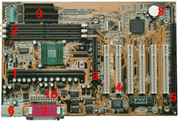
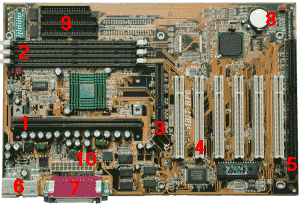

Formation Developpement-Informatique
Description
Le métier de développeur est loin d’être le plus simple dans la famille de l’informatique, toutefois, chaque année, de plus en plus d’individus s’intéressent aux formations pour apprendre à coder Java, Python ou d’autres langages informatiques. La raison ? Tout simplement parce que le métier de développeur web offre un grand nombre de perceptives d’emploi sur le plan local, mais aussi à l’échelle internationale. EPSI vous propose un zoom sur les différents débouchés après une formation dans cette filière.
Les critères privilégiés par les recruteurs
Malgré la présence d’une grande demande de développeur web sur le marché, le secteur reste très exigeant en matière de critères de sélection. Il ne suffit donc pas tout d’obtenir un diplôme de développeur ou quelques compétences dans le secteur pour espérer séduire les recruteurs, certaines compétences et aptitudes peuvent aider à faire la différence et à s’assurer une belle carrière, comme la maîtrise d’un grand nombre de langages de programmation.
Il existe des centaines voire des milliers de langages informatiques, plus vous en connaissez, mieux c’est. La valeur accordée à un développeur est très souvent fonction du nombre de langages informatiques qu’il maîtrise et sa capacité d’adaptation selon les situations et les projets. Il en existe certains dont l’usage est simple comme Python qui est à la base des plateformes comme YouTube et Instagram. Ensuite, nous avons les langages de type JavaScript très appréciés pour les animations et les éléments attractifs d’un site. D’autres langages restent relativement compliqués à l’image de Java, Objectif-C, ou encore C++ qui demandent un apprentissage beaucoup plus approfondi.
Chaque langage colle mieux à un domaine bien spécifique, il est donc important pour un développeur informatique de savoir exactement le type de langage idéal pour son domaine de prédilection afin de mieux exploiter son savoir-faire.
Des opportunités et des employeurs multiples
Après une formation de développeur informatique, les débouchés ne manquent pas. Un jeune programmeur, quel que soit le langage informatique qu’il maîtrise, peut facilement trouver sa place dans une agence web pour travailler en équipe sur des projets. Il peut également intégrer des PME, des start-ups ou des grandes boîtes internationales comme chez Facebookou encore Google, etc.
Par ailleurs, un développeur peut se lancer dans l’aventure entrepreneuriale ou travailler en freelance sur des projets de façon tout à fait autonome. Ces options sont souvent difficiles pour les débutants, mais sont de plus en plus plébiscitées par les programmeurs expérimentés qui ont plus d’autonomie et de liberté dans leur travail.
Parmi les nombreux métiers que le lauréat d’une formation en développement informatique peut exercer, nous avons :
Chef de projet informatique ;
Développeur et concepteur web ;
Web designer ;
Consultant SEO ou référenceur web ;
Ingénieur de déploiement réseau ;
Responsable de sécurité informatique ;
Intégrateur web ; etc.
Notre bachelor informatiquevous donne les outils nécessaires pour bien démarrer votre carrière en informatique.
Place à visiter(avec liens vers google maps)
- IPNET EXPERT SA: cliquez ici
- CIC LOME: Voir plus
- IAI TOGO: Lire plus
Anecdotes
- OPTION INFORMATIQUE EN CLASSE DE SECONDE :Cette séance de prise de contact me permet d'évaluer, les connais- sances théoriques et pratiques des élèves. Ceci est fait de manière infor- melle, par jeu de questions-réponses et par observation de l'élève utili- sant l'ordinateur.
- La première partie, théorique, permet de discerner les principaux constituants d'un ordinateur et ses périphériques, ainsi que leurs fonc- tions essentielles. L'élève complète un document tout en observant un poste informatique. Un certain nombre de périphériques sont connus des élèves. Je leur présente tous les périphériques disponibles dans la salle et qu'ils utiliseront dans l'année.
- L'intérieur de l'unité centrale sera montré dans ses grandes lignes (carte-mère avec composants électroniques, circuits intégrés et imprimés, alimentation, disque dur, lecteur de disquette, haut-parleur) ainsi que la carte d'acquisition vidéo avant son utilisation.
 
